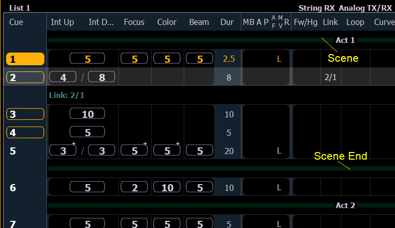

Scenes are a cue organization tool that provide a visual identifier for breaks in your show. Scenes allow for quick cue list navigation without needing to remember a cue's number.

Scenes display in the cue list index and the playback status display as a green bar above the cue they are associated with in the list. An end of scene can also be created, and those display as a green bar under their associated cue.